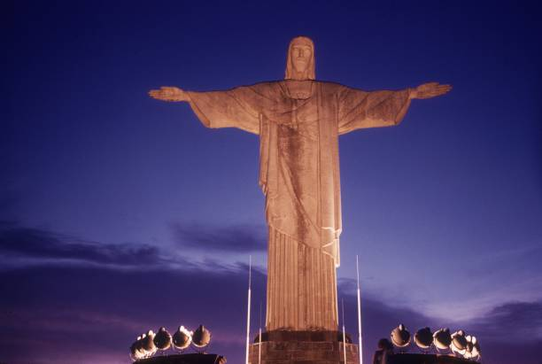

Основные факты
📍 Местоположение
Гора Корковаду, 710 м над уровнем моря.
🏗️ Годы строительства
1922 – 1931 (9 лет).
📏 Высота
38 метров (включая 8м пьедестал).
⚖️ Вес
635 метрических тонн.
⚒️ Материалы
Железобетон и талькохлорит.
Подробная история
Идея создания большого христианского монумента на горе Корковаду впервые возникла в 1850-х годах у католического священника Педру Марии Босса. Он просил финансирования у принцессы Изабеллы, но проект был отклонен после провозглашения Бразилии республикой в 1889 году, когда церковь была отделена от государства.
Второе предложение о статуе было сделано в 1920 году Католическим кругом Рио-де-Жанейро. Они организовали мероприятие «Неделя Монумента» (Semana do Monumento) для сбора пожертвований. Были рассмотрены разные проекты, включая гигантский христианский крест, но в итоге был выбран проект бразильского инженера **Эйтора да Силва Кошта** — образ Христа с распростертыми руками, символизирующий мир.
Строительство и Символизм
Статуя была спроектирована во Франции, так как в Бразилии в то время считалось невозможным создать монумент такого масштаба. Голову и руки создал французский скульптор **Поль Ландовски**. Статуя была изготовлена по частям из железобетона и доставлена в Бразилию, а затем поднята на гору Корковаду по специально построенной железной дороге.
Внешний слой покрыт тысячами маленьких треугольных плиток из **талькохлорита** (мыльного камня). Этот материал был выбран за его прочность и устойчивость к экстремальным погодным условиям. Статуя, благословляющая распростертыми руками город, стала не только символом Рио-де-Жанейро, но и всей Бразилии, а также иконой мира.
Фотогалерея



Key Facts
📍 Location
Corcovado Mountain, 710m above sea level.
🏗️ Years Built
1922 – 1931 (9 years).
📏 Height
38 meters (incl. 8m pedestal).
⚖️ Weight
635 metric tons.
⚒️ Materials
Reinforced concrete & soapstone.
Detailed History
The idea of building a large Christian monument on Corcovado mountain was first suggested in the 1850s by a Catholic priest, Pedro Maria Boss. He requested funding from Princess Isabel, but the project was dismissed after Brazil became a republic in 1889, which separated church and state.
A second proposal for a statue was made in 1920 by the Catholic Circle of Rio. They organized an event called "Monument Week" (Semana do Monumento) to attract donations. Various designs were considered, including a giant Christian cross, but the project by Brazilian engineer **Heitor da Silva Costa** was chosen—an image of Christ with outstretched arms, symbolizing peace.
Construction and Symbolism
The statue was designed in France, as creating a monument of this scale was considered impossible in Brazil at the time. The head and hands were created by French sculptor **Paul Landowski**. The statue was made in pieces from reinforced concrete, shipped to Brazil, and then transported up Corcovado mountain by a purpose-built railway.
The outer layer is covered with thousands of small triangular tiles of **soapstone**. This material was chosen for its durability and resistance to extreme weather. The statue, blessing the city with open arms, has become not only a symbol of Rio de Janeiro but of all of Brazil, and an icon of peace.
Հիմնական փաստեր
📍 Գտնվելու վայրը
Կորկովադո լեռ, ծովի մակարդակից 710 մ բարձրության վրա:
🏗️ Կառուցման տարիներ
1922 – 1931 (9 տարի):
📏 Բարձրությունը
38 մետր (8մ պատվանդանով):
↔️ Թևերի բացվածքը
28 մետր:
⚒️ Նյութեր
Երկաթբետոն և տալկքար:
Մանրամասն պատմություն
Կորկովադո լեռան վրա քրիստոնեական մեծ հուշարձան կանգնեցնելու գաղափարն առաջին անգամ առաջացել է 1850-ականներին կաթոլիկ քահանա Պեդրո Մարիա Բոսի մոտ։ Նա ֆինանսավորում խնդրեց արքայադուստր Իզաբելից, սակայն նախագիծը մերժվեց 1889 թվականին Բրազիլիայի հանրապետություն հռչակվելուց հետո, երբ եկեղեցին անջատվեց պետությունից։
1920 թվականին Ռիոյի կաթոլիկ շրջանակը երկրորդ առաջարկությունն արեց արձանի վերաբերյալ։ Նրանք կազմակերպեցին «Հուշարձանի շաբաթ» (Semana do Monumento)՝ նվիրատվություններ հավաքելու համար։ Քննարկվեցին տարբեր նախագծեր, այդ թվում՝ հսկա քրիստոնեական խաչ, սակայն ի վերջո ընտրվեց բրազիլացի ինժեներ **Հեյտոր դա Սիլվա Կոստայի** նախագիծը՝ Քրիստոսի կերպարը՝ խաղաղությունը խորհրդանշող տարածված ձեռքերով։
Շինարարություն և խորհրդանշան
Արձանը նախագծվել է Ֆրանսիայում, քանի որ այն ժամանակ Բրազիլիայում նման մասշտաբի հուշարձան ստեղծելն անհնարին էր համարվում։ Գլուխն ու ձեռքերը ստեղծել է ֆրանսիացի քանդակագործ **Պոլ Լանդովսկին**։ Արձանը պատրաստվել է երկաթբետոնի կտորներից, տեղափոխվել Բրազիլիա, ապա հատուK կառուցված երկաթուղով բարձրացվել Կորկովադո լեռը։
Արտաքին շերտը պատված է **տալկքարի** (օճառաքար) հազարավոր մանր եռանկյուն սալիկներով։ Այս նյութն ընտրվել է իր ամրության և եղանակային էքստրեմալ պայմաններին դիմակայելու համար։ Բաց ձեռքերով քաղաքն օրհնող արձանը դարձել է ոչ միայն Ռիո դե Ժանեյրոյի, այլև ամբողջ Բրազիլիայի խորհրդանշանը և խաղաղության սրբապատկերը։
Լուսանկարների պատկերասրահ